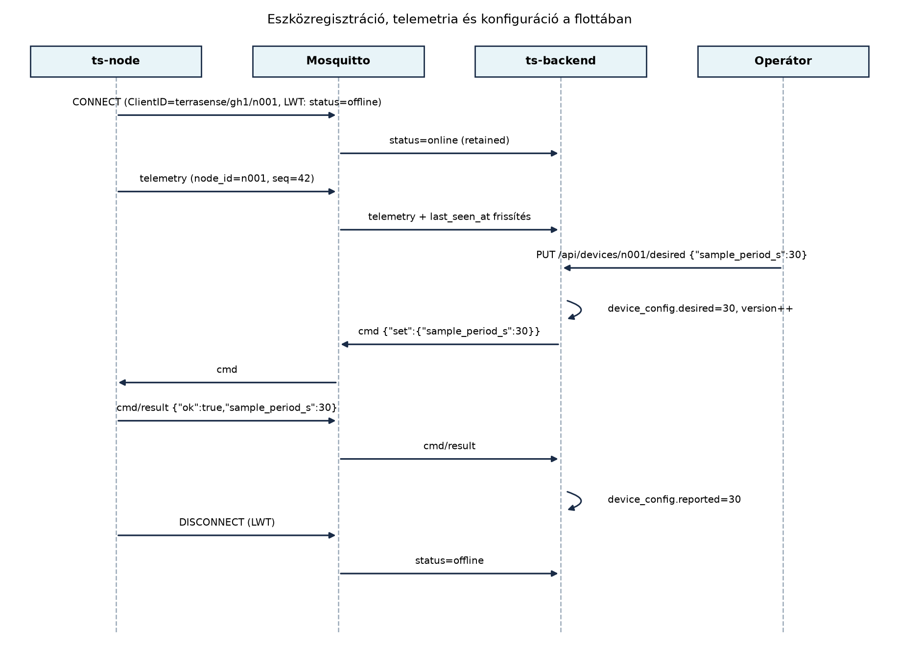

A TerraSense első pilotja három gh1 üvegházban tíz
n001–n010 csomóponttal indult. A sikeres teszt
után a rendszert száz üvegházra bővítik, és ezer eszköz küldi a
telemetriát. Kézzel már nem lehet követni, melyik csomópont milyen
firmware-t futtat, mikor jelentkezett utoljára, miért indult újra, és
kapott-e már új mintavételezési konfigurációt. A flotta méretének
növekedésével a működtetés minősége nem a rádióprotokollon vagy a
brokeren múlik, hanem azon, hogy a backend rendelkezik-e
eszköznyilvántartással, és abból ki tudja-e osztani a
konfigurációt, figyelni tudja-e az állapotot, és le tudja-e vezényelni
az eszköz életciklusának végét.
Definíció. Az eszköznyilvántartás (device registry) a flotta összes eszközének közös, lekérdezhető nyilvántartása. Minden eszközhöz egyértelmű azonosítót, hitelesítési metaadatokat, hardver- és szoftververziót, csoporttagságot, telepítési helyet, valamint az aktuális állapotra és a kiosztott konfigurációra vonatkozó hivatkozásokat rendel.
Definíció. A flotta (fleet) az egy rendszerhez tartozó, közösen menedzselt eszközök összessége. A flottakezelés magában foglalja az eszközök regisztrációját, csoportosítását, konfigurációját, állapotfigyelését, frissítését és kivezetését.
Definíció. Az eszközárnyék (device shadow) itt az Eszközárnyék és digitális iker: kívánt és jelentett állapot alfejezet digitális iker fogalmának flotta-szintű alkalmazása: minden eszközhöz egy kívánt (desired) és egy jelentett (reported) állapotot tárolunk. A kívánt állapotot az üzemeltető vagy a backend logika írja, a jelentett állapotot az eszköz ténylegesen visszajelzi. A kettő eltérése konfiguráció-kézbesítési problémát jelez.
A nyilvántartás és az árnyék kapcsolatát a következő szekvencia mutatja be:

A diagram sorszáma: 1. ábra. A szöveg nélküli olvasó számára: az
eszköz a terrasense/gh1/n001/status retained üzenettel
jelzi az online állapotot, a broker a Last Will üzenetből automatikusan
offline-ra vált. Az operátor egy REST hívással módosítja a kívánt
beállítást, a backend parancsot küld az eszköznek a
terrasense/gh1/n001/cmd topicra, majd az eszköz a
cmd/result topicra válaszol, és a backend frissíti a
jelentett állapotot.
A flotta-adatmodell a TerraSense-ben a ts-backend
PostgreSQL adatbázisában a következő táblákkal valósul meg:
device_groups: csoportok, például
gh1-öntöző, gh1-talaj.devices: egyedi eszköz, a node_id
azonosítóval (site+node összevontan n001 a gh1
alatt, hogy a topicból közvetlenül kereshető legyen).device_config: eszközönként egy sor, a
desired és reported JSONB mezőkkel, valamint
version egész számmal.device_state: az utolsó ismert futásállapot, beleértve
a reset_cause értékét és az utolsó seq
sorszámot.devices.last_seen_at és a
device_state.status mező pedig a jelenlétet tárolja.A nyilvántartás kialakításakor több tervezési döntést kell meghozni; a főbb kompromisszumokat a következő táblázat foglalja össze.
| Kérdés | Lehetséges megoldás | Előny | Hátrány | TerraSense-választás |
|---|---|---|---|---|
| Hol tároljuk az eszközöket? | Külön flottaszolgáltatás (LwM2M) | szabványos, kész funkciók | plusz rendszer, zártabb adatmodell | saját táblák a meglévő backendben, mert a TerraSense-t magunk építjük |
| Csoportosítás módja | statikus csoportok | egyszerű, kiszámítható | nem követi a valós változásokat | címkék + csoportok vegyesen |
| Konfiguráció kiosztása | közvetlen parancs küldés | azonnali | nem tolerálja az eszköz offline állapotát | árnyék: a desired-et tároljuk, a kézbesítés aszinkron és újrapróbálható |
| Jelenlét követése | pollozás (REST) | megbízható | skálázhatatlan, késleltetett | MQTT LWT + retained status |
| Állapot perzisztencia | csak memória | gyors | újrainduláskor elveszik | PostgreSQL + TimescaleDB, az állapotok historizálhatók |
A csoportok és címkék szerepe az, hogy a műveleteket
ne egyesével kelljen elvégezni. A TerraSense-ben minden eszközhöz
legalább egy csoportot rendelünk, például gh1-öntöző,
gh1-talaj. A csoporthoz tartozik egy konfigurációs
sablon, amely az új eszközök alap desired állapotát adja. A
címkék (például kritikus, preview) szabadon
szűrhetővé teszik a flottát, anélkül hogy az adatmodellt mereven át
kellene alakítani.
A konfiguráció-kiosztás árnyékkal elve: a backend
soha nem közvetlenül írja az eszköz memóriáját, hanem a
device_config.desired mezőben rögzíti a kívánt állapotot.
Egy háttérfolyamat figyeli a desired és reported közti különbséget, és
minden változásnál parancsot küld a
terrasense/<site>/<node>/cmd topicra. Az eszköz
a cmd/result topicra küldi a nyugtát, amelyben szerepel a
ténylegesen alkalmazott érték. A backend ekkor frissíti a
reported mezőt. Ha az eszköz offline, a parancs a brokeren
megőrzött üzenetként vagy a backend újrapróbáló logikájával később is
kézbesíthető; a desired mindvégig megmarad.
A jelenlétfigyelés az MQTT Last Will és Testament
(LWT) mechanizmusra épül. A ts-node a
terrasense/<site>/<node>/status retained
topicra online üzenetet küld, és a CONNECT során LWT-t
állít be offline tartalommal. Ha a kapcsolat törpe módban
megszakad, a broker offline retained üzenetet publikál,
amit a backend feliratkozással figyel, és frissíti a
device_state.status mezőt. A telemetria érkezésekor a
devices.last_seen_at is frissül, így a csendes, de élő
kapcsolat is nyomon követhető.
Az alábbi példa a TerraSense flotta nyilvántartásának konkrét
megvalósítását mutatja. Az adatmodell a
~/iot-labor/i061/schema.sql fájlban kerül rögzítésre.
Munkakönyvtár:
mkdir -p ~/iot-labor/i061 && cd ~/iot-labor/i061A PostgreSQL/TimescaleDB táblákat a következő SQL hozza létre:
-- schema.sql: TerraSense flotta-nyilvántartás
CREATE TABLE IF NOT EXISTS device_groups (
group_id TEXT PRIMARY KEY,
name TEXT NOT NULL,
config_template JSONB NOT NULL DEFAULT '{}'::jsonb
);
CREATE TABLE IF NOT EXISTS devices (
node_id TEXT PRIMARY KEY, -- pl. 'gh1/n001'
site TEXT NOT NULL, -- 'gh1'
node TEXT NOT NULL, -- 'n001'
group_id TEXT REFERENCES device_groups(group_id),
fw_version TEXT,
cert_serial TEXT, -- a provisionált X.509 tanúsítvány sorszámja
cert_path TEXT, -- a CA által kiadott tanúsítvány fájlútvonala
cert_fingerprint_sha256 TEXT, -- a tanúsítvány SHA-256 lenyomata
active BOOLEAN NOT NULL DEFAULT true,
provisioned_at TIMESTAMPTZ NOT NULL DEFAULT now(),
last_seen_at TIMESTAMPTZ,
decommissioned_at TIMESTAMPTZ,
decommission_reason TEXT
);
CREATE TABLE IF NOT EXISTS device_config (
node_id TEXT PRIMARY KEY REFERENCES devices(node_id),
desired JSONB NOT NULL DEFAULT '{}'::jsonb,
reported JSONB NOT NULL DEFAULT '{}'::jsonb,
version INT NOT NULL DEFAULT 0,
updated_at TIMESTAMPTZ NOT NULL DEFAULT now()
);
CREATE TABLE IF NOT EXISTS device_state (
node_id TEXT PRIMARY KEY REFERENCES devices(node_id),
status TEXT NOT NULL DEFAULT 'unknown', -- online | offline | unknown
reset_cause TEXT,
last_seq BIGINT,
last_uptime_s BIGINT
);
-- Meglévő adatbázis migrálása a kivezetéshez (új telepítésnél is lefut, idempotens):
ALTER TABLE devices ADD COLUMN IF NOT EXISTS cert_serial TEXT;
ALTER TABLE devices ADD COLUMN IF NOT EXISTS cert_path TEXT;
ALTER TABLE devices ADD COLUMN IF NOT EXISTS cert_fingerprint_sha256 TEXT;
ALTER TABLE devices ADD COLUMN IF NOT EXISTS active BOOLEAN NOT NULL DEFAULT true;
ALTER TABLE devices ADD COLUMN IF NOT EXISTS decommissioned_at TIMESTAMPTZ;
ALTER TABLE devices ADD COLUMN IF NOT EXISTS decommission_reason TEXT;
CREATE TABLE IF NOT EXISTS device_audit (
audit_id BIGSERIAL PRIMARY KEY,
node_id TEXT NOT NULL,
action TEXT NOT NULL, -- decommission | revoke_certificate | purge_telemetry
detail JSONB NOT NULL DEFAULT '{}'::jsonb,
performed_by TEXT NOT NULL,
performed_at TIMESTAMPTZ NOT NULL DEFAULT now()
);A devices tábla node_id értéke a
topicból származó <site>/<node> kulcs, például
gh1/n001. Ez garantálja, hogy a telemetria topicjából
közvetlenül hivatkozhatunk a nyilvántartás rekordjára. A
device_config.desired mezőbe például a következő JSON
kerül, amikor az operátor a mintavételezési időt 60-ról 30 másodpercre
csökkenti:
{"sample_period_s": 30}A backend ekkor a device_config.version értékét növeli,
és egy MQTT parancsot küld a terrasense/gh1/n001/cmd
topicra:
{"set":{"sample_period_s":30}}Az eszköz válasza a terrasense/gh1/n001/cmd/result
topicra:
{"ok":true,"sample_period_s":30}A backend a válasz alapján frissíti a
device_config.reported mezőt. A reported és
desired közti eltérés akkor jelez hibát, ha a parancs nem
kerül nyugtázásra.
A flotta-adatmodell teszteléséhez először töltsük be a sématáblákat a backend adatbázisába:
A közös stackben a PostgreSQL/TimescaleDB szolgáltatás neve
lab-timescaledb, a felhasználó terra, az
adatbázis terrasense; ezt a konvenciót az Idősoros adatbázisok és adatmodellezés laborban
hoztuk létre. A séma betöltése:
docker compose -f ~/iot-labor/stack/compose.yaml exec -T lab-timescaledb \
psql -U terra -d terrasense -f - < ~/iot-labor/i061/schema.sqlMegjegyzés: a korábbi alfejezetekben előforduló
postgres/tsésts-timescaledbnevek a laborok közötti kísérletezés maradványai. Ettől kezdve a könyv alab-timescaledbszolgáltatásnevet és aterrafelhasználót használja; ha a helyi stack ettől eltér, a parancsot egyszer kell a tényleges névhez igazítani.
Regisztráljunk egy teszteszközt:
INSERT INTO device_groups (group_id, name, config_template)
VALUES ('gh1-öntöző', 'Üvegház 1 öntöző kör', '{"sample_period_s":60}');
INSERT INTO devices (node_id, site, node, group_id, fw_version)
VALUES ('gh1/n001', 'gh1', 'n001', 'gh1-öntöző', '1.2.0');
INSERT INTO device_config (node_id, desired, reported, version)
VALUES ('gh1/n001', '{"sample_period_s":60}', '{}', 0);
INSERT INTO device_state (node_id, status, reset_cause, last_seq, last_uptime_s)
VALUES ('gh1/n001', 'offline', 'power_on', NULL, NULL);A lekérdezés az összes eszközre és az eltérésre:
SELECT d.node_id, d.group_id, d.fw_version, st.status,
c.desired ->> 'sample_period_s' AS desired_period,
c.reported ->> 'sample_period_s' AS reported_period, c.version
FROM devices d
JOIN device_state st USING (node_id)
JOIN device_config c USING (node_id);Várt kimenet:
node_id | group_id | fw_version | status | desired_period | reported_period | version
-----------+-------------+------------+--------+----------------+-----------------+---------
gh1/n001 | gh1-öntöző | 1.2.0 | offline| 60 | NULL | 0A leggyakoribb hibákat és javításukat az alábbi táblázat foglalja össze.
| Tünet | Lehetséges ok | Javítás |
|---|---|---|
A last_seen_at nem frissül |
A telemetria ingest nem hívja a flotta szolgáltatást | Ellenőrizd az MQTT-feliratkozást a
terrasense/+/+/telemetry topicra |
| Az eszköz forever offline marad | Az LWT retained üzenet elveszett, vagy a backend nem írja a
status mezőt |
Ellenőrizd a retained flaget a publishnál, és a status topic feliratkozást |
A reset_cause NULL |
Az eszköz nem küldi a boot üzenetben a reset okot | A Hibatűrés: watchdog, újraindulás,
hibanaplózás labor boot üzenetét bővítsd ki a
reset_cause mezővel, és a backend parserében kezeld |
A parancs után a reported nem frissül |
Az eszköz nem válaszol a cmd/result topicra |
Ellenőrizd a parancs topicját és a válasz JSON sémáját; a backend timeout után hibát jelezzen |
A jelenlétet a telemetriából becsüljük. Sokan
azt gondolják, hogy ha nincs telemetria, az eszköz leállt. Pedig ha a
mintavételezési idő 10 perc, akkor 9 percig csend van. A megbízható
jelenlét az MQTT LWT + retained status, nem az utolsó üzenet ideje. A
last_seen_at csak kiegészítő diagnosztikai adat.
A kivezetés nem azonos az adatbázis-sor törlésével. Ha egy eszközt leszerelünk, a hitelesítő kulcsát is vissza kell vonni, különben a megtalált eszközből a támadó a hálózathoz férhet. A kivezetés továbbá törölheti az adatokat, de a nyilvántartási rekordot megtarthatjuk audit célra (soft delete), ahelyett hogy fizikailag kitöröljük.
A desired állapot a device_config-ban, nem
az eszközön. Ha a kívánt értéket csak közvetlen MQTT paranccsal
küldjük el, az eszköz offline idején elvész. Az árnyék minta szerint a
desired tárolva van, és a kézbesítés aszinkron,
újrapróbálással.
Mikor érdemes külön flottakezelő szolgáltatást (például egy LwM2M szervert) használni a saját nyilvántartás helyett? Fogalmazd meg a TerraSense esetére vonatkozó döntést.
Tervezz SQL lekérdezést, amely megadja a flotta verzióeloszlását:
hány eszköz fut az egyes fw_version értékeken
csoportonként? Az eredményt csoport és verzió szerint rendezd.
A TerraSense backendben valósíts meg egy
GET /api/devices/{node_id}/state végpontot, amely
visszaadja a devices, device_config és
device_state táblákből az adott eszköz teljes állapotát
egyetlen JSON objektumban.
Egészítsd ki a TerraSense backendet egy kivezetési
végponttal (DELETE /api/devices/{site}/{node}), amely: -
ellenőrzi, hogy az eszköz már legalább 30 napja offline, - visszavonja
az eszköz tanúsítványát a labor-CA CRL-jében (OpenSSL 3.0.13), - lezárja
a devices rekordot (active=false,
decommissioned_at, ok), és auditbejegyzést ír, - a
telemetriai adatokat nem törli automatikusan: a
megőrzés külön politika, a tömeges törlés csak külön, naplózott
művelettel történhet. Írd le a lépéseket, az azonosítók egyeztetését (a
telemetriában site + node_id, nem
site/node) és a szükséges tranzakciós határokat.
Külön LwM2M szervert akkor érdemes választani, ha a flotta nagy,
heterogén, több gyártó eszközeit is kezelni kell, és a szabványos
eszközmenedzsment (például OTA, szenzorértékek expozíciója) előnyt
jelent. A TerraSense esetében a flotta homogén (ts-node), a
backendünk már rendelkezik MQTT-ingesttel és eszközárnyékkal, ezért a
saját nyilvántartás egyszerűbb és jobban integrálható. Döntés: saját
táblák a ts-backend-ben.
SELECT d.group_id, d.fw_version, count(*) AS darab
FROM devices d
GROUP BY d.group_id, d.fw_version
ORDER BY d.group_id, d.fw_version;Ez csoportonként megadja, hány eszköz futtatja az egyes verziókat. A
devices táblában a fw_version az OTA-frissítés: A/B képek, rollback, delta, fokozatos
kiadás OTA labor logikájával frissül.
A Spring Boot controller DeviceStateController.java:
package com.terrasense.backend.device;
import com.fasterxml.jackson.databind.JsonNode;
import com.fasterxml.jackson.databind.ObjectMapper;
import org.springframework.http.ResponseEntity;
import org.springframework.jdbc.core.JdbcTemplate;
import org.springframework.web.bind.annotation.*;
import java.time.OffsetDateTime;
import java.util.LinkedHashMap;
import java.util.List;
import java.util.Map;
@RestController
@RequestMapping("/api/devices")
public class DeviceStateController {
private final JdbcTemplate jdbc;
private final ObjectMapper objectMapper;
public DeviceStateController(JdbcTemplate jdbc, ObjectMapper objectMapper) {
this.jdbc = jdbc;
this.objectMapper = objectMapper;
}
@GetMapping("/{site}/{node}/state")
public ResponseEntity<Map<String, Object>> getDeviceState(
@PathVariable String site, @PathVariable String node) {
String nodeId = site + "/" + node;
String sql = """
SELECT d.node_id, d.site, d.node, d.group_id, d.fw_version,
d.provisioned_at, d.last_seen_at, d.active,
c.desired::text AS desired_json,
c.reported::text AS reported_json,
c.version AS config_version,
s.status, s.reset_cause, s.last_seq, s.last_uptime_s
FROM devices d
JOIN device_config c USING (node_id)
JOIN device_state s USING (node_id)
WHERE d.node_id = ?
""";
List<Map<String, Object>> rows = jdbc.query(sql, (rs, rowNum) -> {
Map<String, Object> row = new LinkedHashMap<>();
row.put("node_id", rs.getString("node_id"));
row.put("site", rs.getString("site"));
row.put("node", rs.getString("node"));
row.put("group_id", rs.getString("group_id"));
row.put("fw_version", rs.getString("fw_version"));
row.put("provisioned_at", rs.getObject("provisioned_at", OffsetDateTime.class));
row.put("last_seen_at", rs.getObject("last_seen_at", OffsetDateTime.class));
row.put("active", rs.getBoolean("active"));
row.put("desired", readJson(rs.getString("desired_json")));
row.put("reported", readJson(rs.getString("reported_json")));
row.put("config_version", rs.getInt("config_version"));
row.put("status", rs.getString("status"));
row.put("reset_cause", rs.getString("reset_cause"));
row.put("last_seq", rs.getObject("last_seq", Long.class));
row.put("last_uptime_s", rs.getObject("last_uptime_s", Long.class));
return row;
}, nodeId);
if (rows.isEmpty()) {
return ResponseEntity.notFound().build();
}
return ResponseEntity.ok(rows.get(0));
}
private JsonNode readJson(String json) {
try {
return json == null ? null : objectMapper.readTree(json);
} catch (Exception e) {
throw new IllegalStateException("Érvénytelen JSONB érték", e);
}
}
}A com.terrasense.backend.device csomag a
com.terrasense.backend főcsomag alatt van, ezért a Spring
Boot alapértelmezett komponenskeresése megtalálja. A
node_id a site + "/" + node összefűzésből áll
elő, így a GET /api/devices/gh1/n001/state kérés a
gh1/n001 rekordot adja vissza. A queryForList
helyett szándékosan jdbc.query és
LinkedHashMap szerepel: a queryForMap üres
eredményre kivételt dob, ehelyett itt hiányzó eszközre 404 a válasz. A
JSONB mezőket ::text alakban olvassuk, majd
Jacksonnal JsonNode-ná alakítjuk; így a válasz valódi
JSON-objektum lesz, nem PGobject-szerű burkoló. A
TIMESTAMPTZ oszlopokat OffsetDateTime-ként
olvassuk, nem Timestamp + LocalDateTime
párossal.
A kivezetés három, egymástól elkülönített felelősséget kapcsol össze: a nyilvántartási rekord lezárását, a hozzáférés-visszavonást és az adatmegőrzést. A végpont csak az első kettőt végzi el; a telemetria törlése külön, naplózott művelet.
package com.terrasense.backend.device;
import org.springframework.http.HttpStatus;
import org.springframework.http.ResponseEntity;
import org.springframework.jdbc.core.JdbcTemplate;
import org.springframework.transaction.support.TransactionTemplate;
import org.springframework.web.bind.annotation.*;
import java.security.Principal;
import java.time.OffsetDateTime;
import java.util.Map;
@RestController
@RequestMapping("/api/devices")
public class DeviceLifecycleController {
private final JdbcTemplate jdbc;
private final TransactionTemplate tx;
private final CertificateRevocationService revocationService;
public DeviceLifecycleController(JdbcTemplate jdbc, TransactionTemplate tx,
CertificateRevocationService revocationService) {
this.jdbc = jdbc;
this.tx = tx;
this.revocationService = revocationService;
}
private record DeviceRow(String certSerial, String certPath, boolean active,
OffsetDateTime lastSeen, String status) {}
@DeleteMapping("/{site}/{node}")
public ResponseEntity<Void> decommission(@PathVariable String site,
@PathVariable String node,
Principal principal) {
String nodeId = site + "/" + node;
var rows = jdbc.query("""
SELECT d.cert_serial, d.cert_path, d.active, d.last_seen_at, s.status
FROM devices d
JOIN device_state s USING (node_id)
WHERE d.node_id = ?
""", (rs, i) -> new DeviceRow(
rs.getString("cert_serial"),
rs.getString("cert_path"),
rs.getBoolean("active"),
rs.getObject("last_seen_at", OffsetDateTime.class),
rs.getString("status")), nodeId);
if (rows.isEmpty()) {
return ResponseEntity.notFound().build();
}
DeviceRow row = rows.get(0);
if (!row.active()) {
return ResponseEntity.status(HttpStatus.CONFLICT).build();
}
if (!"offline".equals(row.status()) || row.lastSeen() == null
|| row.lastSeen().isAfter(OffsetDateTime.now().minusDays(30))) {
return ResponseEntity.status(HttpStatus.CONFLICT).build();
}
if (row.certSerial() == null || row.certPath() == null) {
return ResponseEntity.status(HttpStatus.CONFLICT).build();
}
// 1. Külső PKI-hívás a SQL tranzakción kívül. A visszavonás idempotens és
// fail-closed: ha a későbbi DB-művelet elhasal, a tanúsítvány akkor is
// visszavont marad, ami biztonságos irány.
revocationService.revoke(row.certSerial(), row.certPath(), "cessationOfOperation");
// 2. A nyilvántartás lezárása és az audit egy tranzakcióban.
tx.executeWithoutResult(status -> {
jdbc.update("""
UPDATE devices
SET active = false,
decommissioned_at = now(),
decommission_reason = ?
WHERE node_id = ? AND active
""", "decommissioned by operator", nodeId);
audit(nodeId, "decommission",
Map.of("cert_serial", row.certSerial()), principal);
});
return ResponseEntity.noContent().build();
}
@PostMapping("/{site}/{node}/purge-telemetry")
public ResponseEntity<Void> purgeTelemetry(@PathVariable String site,
@PathVariable String node,
@RequestParam String reason,
Principal principal) {
String nodeId = site + "/" + node;
Long closed = jdbc.queryForObject(
"SELECT count(*) FROM devices WHERE node_id = ? AND NOT active",
Long.class, nodeId);
if (closed == null || closed == 0) {
return ResponseEntity.status(HttpStatus.CONFLICT).build();
}
int deleted = jdbc.update(
"DELETE FROM telemetry WHERE site = ? AND node_id = ?", site, node);
audit(nodeId, "purge_telemetry",
Map.of("site", site, "node", node, "rows", deleted, "reason", reason),
principal);
return ResponseEntity.noContent().build();
}
private void audit(String nodeId, String action, Map<String, Object> detail,
Principal principal) {
jdbc.update("""
INSERT INTO device_audit (node_id, action, detail, performed_by)
VALUES (?, ?, ?::jsonb, ?)
""", nodeId, action, toJson(detail),
principal == null ? "system" : principal.getName());
}
private static String toJson(Map<String, Object> detail) {
try {
return new com.fasterxml.jackson.databind.ObjectMapper()
.writeValueAsString(detail);
} catch (Exception e) {
throw new IllegalStateException(e);
}
}
}A tanúsítvány-visszavonó szolgáltatás interfésze és OpenSSL-alapú laborimplementációja:
package com.terrasense.backend.device;
public interface CertificateRevocationService {
void revoke(String certSerial, String certPath, String reason);
}package com.terrasense.backend.device;
import org.springframework.beans.factory.annotation.Value;
import org.springframework.stereotype.Service;
import java.io.IOException;
import java.nio.file.Path;
import java.util.List;
@Service
public class OpenSslCertificateRevocationService
implements CertificateRevocationService {
private final String caConfig;
private final String crlFile;
public OpenSslCertificateRevocationService(
@Value("${terrasense.pki.ca-config}") String caConfig,
@Value("${terrasense.pki.crl-file}") String crlFile) {
this.caConfig = caConfig;
this.crlFile = crlFile;
}
@Override
public void revoke(String certSerial, String certPath, String reason) {
// Az openssl ca -revoke ugyanarra a sorszámra ismételten hívható;
// a labor-CA index.txt-jében ilyenkor nem keletkezik új bejegyzés.
run(List.of("openssl", "ca", "-config", caConfig,
"-revoke", certPath, "-crl_reason", reason));
run(List.of("openssl", "ca", "-config", caConfig,
"-gencrl", "-out", crlFile));
run(List.of("openssl", "crl", "-in", crlFile, "-noout", "-text"));
}
private void run(List<String> command) {
try {
Process process = new ProcessBuilder(command)
.redirectErrorStream(true)
.start();
String output = new String(process.getInputStream().readAllBytes());
int exit = process.waitFor();
if (exit != 0) {
throw new IllegalStateException(
"PKI-parancs sikertelen: " + command + "\n" + output);
}
} catch (IOException | InterruptedException e) {
Thread.currentThread().interrupt();
throw new IllegalStateException("PKI-parancs hiba", e);
}
}
}A TIMESTAMPTZ oszlopot itt is
rs.getObject(..., OffsetDateTime.class) adja vissza; a
Timestamp.class és a LocalDateTime
kombinációja azért hibás, mert a PostgreSQL driver
Timestamp-et ad, a LocalDateTime viszont zóna
nélküli, és a két típus között nincs automatikus, időzóna-helyes
átalakítás. A telemetria törlése a site és a
node_id (n001) párost használja, nem a
gh1/n001 összevont kulcsot, mert az ingest a topicból külön
tárolja a site-ot és a node-ot.
A tranzakciós határok: a PKI-hívás nem rollbackelhető, ezért a SQL
tranzakción kívül, előbb fut; a rekord lezárása és az audit egy
tranzakcióban történik. Ha a PKI-hívás sikerül, de a DB-commit
meghiúsul, az eszköz tanúsítványa visszavont marad (fail-closed), és az
operátor a műveletet idempotensen megismételheti. Nagyobb rendszerben
ugyanezt outbox-mintával lehet pontosan egyszerűvé tenni: a tranzakció
csak egy revocation_outbox sort ír, amelyet egy
háttérfeldolgozó hajt végre.
A Flottakezelés: nyilvántartás, konfiguráció,
állapot alfejezet a TerraSense flottakezelését vezette be.
Létrehoztuk a flotta-adatmodellt a
~/iot-labor/i061/schema.sql fájlban:
device_groups (csoportok és konfigurációs sablonok),
devices (identitás, verzió, csoport, jelenléti idő,
tanúsítvány-nyilvántartás és aktív státusz), device_config
(desired/reported JSONB árnyék és verziószám), device_state
(status, reset ok, utolsó szekvencia és uptime), valamint
device_audit (kivezetési és adattörlési műveletek). A
konfiguráció-kiosztásnál az árnyék mintát alkalmaztuk: a desired-et
tároljuk, parancsot küldünk a
terrasense/<site>/<node>/cmd topicra, és a
cmd/result üzenetből frissítjük a reported mezőt. A
jelenlétfigyelés az MQTT LWT + retained status üzenetekre
épül. A kivezetés három külön felelősség: a tanúsítvány CRL-be kerül, a
devices rekord lezárul (active=false,
decommissioned_at, ok) és auditbejegyzés készül; a
telemetria alapértelmezés szerint megmarad, törlése csak külön,
indoklással naplózott művelettel lehetséges. Ezt az adatmodellt
használja az Megfigyelhetőség végponttól végpontig:
metrikák, naplók, nyomkövetés és a Záróprojekt:
a teljes TerraSense rendszer összeállítása és átvétele
alfejezet.
JSONB-kezelését a laborban kell ellenőrizni; a
::text + Jackson megoldás a tananyagban bemutatott,
hordozható út, de produkciós környezetben egy explicit
TypeHandler is indokolt lehet.compose.yaml szolgáltatás- és
adatbázisnevei a korábbi laboroktól függnek; a parancsban feltüntetett
lab-timescaledb szolgáltatás-, terra
felhasználó- és terrasense adatbázisnév egyezőségét a helyi
környezetben kell validálni.openssl ca -revoke, -gencrl,
openssl crl) statikusan, a labor-CA konfigurációja alapján
készültek; a tényleges CRL-fájl elérését és a CA index.txt
állapotát a laborban kell ellenőrizni. A fejezet nem állítja, hogy a
visszavonást végrehajtottuk.